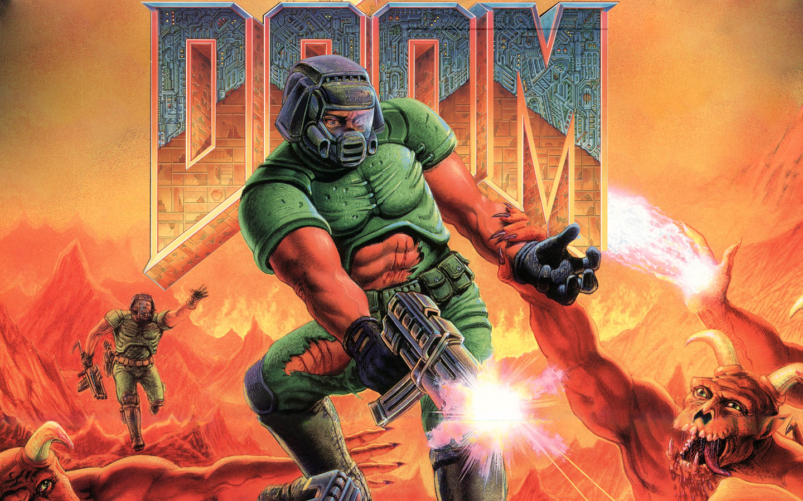

Doom es un videojuego de disparos en primera persona, denominado más comúnmente como FPS (First Person Shooter), creado por id Software en 1993 por un grupo dirigido por John Carmack. Dicho videojuego funcionaba bajo el sistema operativo DOS, utiliza 4 MB de memoria RAM y requiere al menos un procesador 386 a 33 MHz o 486 a 25 MHz. El juego consiste en comandar a un marine, que se encuentra de rutina en una estación en Phobos, una de las lunas de Marte. En un segundo, las puertas del Infierno quedan abiertas, dejando libres a un sinfín de demonios, espíritus inmundos, zombies, que infestan a la base en cuestión de horas. Como protagonista, eres el único ser humano superviviente en la estación y tu misión es ir logrando salir con vida de nivel en nivel; muy al estilo de Wolfenstein 3D, que fue el primer FPS de Id Software; sin embargo el reto aquí es aun mayor. Cabe mencionar que Doom popularizó la mayoría de los aspectos de los juegos de disparos en primera persona, (también conocidos como FPS), y hay muchos que mencionan que fue este quien creo la plataforma que los demás juegos de este género hubieran de seguir, además de que en términos de creatividad, permitió que se introdujeran al medio las expansiones creadas por el usuario, WADs. En 1994 salió Doom 2, que es la continuación, seguido por Ultimate Doom, idéntico al Doom original pero con un episodio más para expertos. Le siguieron en 1996 y 1997 para Nintendo 64 Doom 64 y para Super Nintendo, publicado por Midway Games. Super Nintendo Enternaiment System (SNES) Doom: La versión para Super Nes supuso un avance importante para la consola a nivel técnico, ya que mostraba gráficos poligonales con texturas en tiempo real, algo que para que la consola no había sido diseñada y con la ayuda del chip FX se conseguía. Esta versión es la misma de Doom de PC pero algunas texturas son diferentes y algunos mapas también pero sin perder mucho la forma de los mapas Doom 64: Esta versión de Doom es diferente a Doom y a Doom 2 ya que teóricamente este juego continua la historia de Doom 2. El 3 de agosto del 2004 fue lanzado al mercado Doom 3, el cual incluye no sólo uno de los motores 3D más potentes hasta la fecha de salida, sino también una ambientación única para un juego de esta clase, que permite a cualquiera modificar casi la gran mayoría de los aspectos del juego, siendo uno de los mejores videojuegos de todos hasta la fecha.
